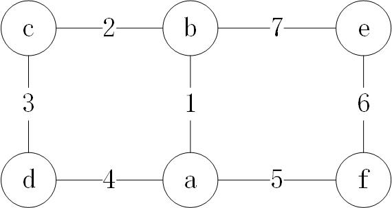
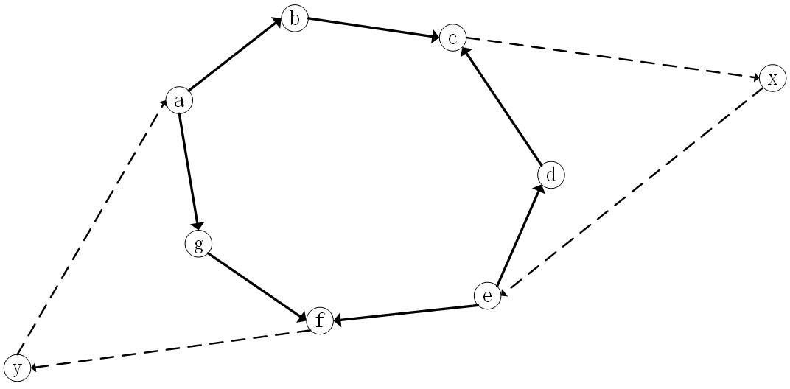

基路径测试
在进行白盒测试时，我们常常不能穷尽程序的所有路径。这时一个可行的选择是将程序看成是由一个个独立路径组合而成，转而去测试每一条独立路径上程序的行为。
这里路径指的是从程序的起始点到结束点的一条通路，这里我们假设程序有且只有一个起始点与结束点。而独立路径指的是这条路径不能通过其他路径的线性组合得到。这种将程序分解成独立路径的思想是由McCabe在他1976年的论文 A Complexity Measure 中提出的，在这篇论文中，他也意识到了这是一种有用的测试方法。
独立路径个数 = 圈复杂度
有了这种思想，我们的第一个问题就是对于特定的程序，这样的独立路径有多少个。McCabe直接引用了图论中的结论：
设图$G$有$n$个顶点，$e$条边，$p$个连通分枝，那么其圈复杂度（cyclomaticnumber）定义为：$v(G)=e-n+p$。
定理1
对于一个强连通图，其圈复杂度等于其极大线性无关回路的个数。
这样，McCabe在控制流图中添加一条边，将程序的结束点与开始点相连，使之成为强连通的，此时运用[定理1]，直接
对新得到的图运用公式得到程序的独立路径个数。下面我们就证明这个定理。
我们先证明两个引理。
引理1
对于s-多重图（即两个点之间至多有s条边）$G$，如果在其两个点$a,b$间再增加一条边，构成新图$G’$那么有：
如果$a,b$是同一顶点，或者是连通的，那么$v(G’) = v(G) + 1$
对于$a,b$的其他情况，那么$v(G’) = v(G)$
考虑这种操作的影响，如果$a,b$是同一顶点，或者是连通的，那么节点数不变，连通分支数不变，只有边数增加1.
故$v(G’) = v(G) + 1$;对于$a,b$的其他情况，节点数不变，连通分支数减少1，边数增加1，故$v(G’) = v(G)$。
下面为了形式化的表示独立圈的概念，我们将一个圈用向量的形式表示：为边编号为$1,2,\cdots,k$，为边任意指定一个方向
以抵消同一条边相反方向的两次经过，那么向量$(c_1,c_2,\cdots,c_k)$就代表这个圈经过了第$1,2,\cdots,k$条边$c_1,c_2,\cdots,c_k$
次。这种表示方法可以构成一个线性空间，故我们可以如常定义线性独立的含义。下面我们举一个简单的例子。

如上图所示，图中$n = 6, e = 7 p = 1,v(G) = 7 - 6 + 1 = 2$.我们选择$a \to b \to c \to d \to a$
和$a \to b \to e \to f \to a$作为一组基。表为向量：$x = (1,1,1,1,0,0,0), y = (1,0,0,0,1,1,1)$，现在考虑图中
另外的圈，如$a \to f \to e \to b \to b \to a, z_1 = (-1,0,0,0,-1,-1,-1) = -y$,又如$c \to b \to e \to f \to a \to d \to c
, z_2 = (0,-1,-1,-1,1,1,1) = -x + y$.我们还可以注意到这里运算的图论意义：对向量取反即圈反向，乘以一个正整数$n$即重复圈$n$次。
引理2
对于s-多重图$G$，其圈复杂度等于其极大线性无关圈数。
我们考虑将图$G$中的边全部去掉，再一条一条增加回去。首先我们知道初始没有边时$v(G) = 0$。
又由[引理1]知，只有在将边连成环时$v(G)$才会增加。现在假设我们已经有了一组基包括
圈$\mu_1,\mu_2,\cdots$,下面添加一条边$u_k$后形成了一些新环$\nu_1,\nu_2,\cdots$。下面我们
说明此时$V(G)$与极大线性无关圈数同时增加1.前者是由[引理1]显然的。考虑向量$\nu_1$,它必然
不能被$\mu_1,\mu_2,\cdots$线性表示，这是因为这些圈不包含边$u_k$,其向量的第$k$个分量均为0，而
$\nu_1$向量的第$k$个分量为1.另一方面$\mu_2,\cdots$不包含新边，已经能够被$\mu_1,\mu_2,\cdots,nu_1$
线性表示。故其极大线性无关圈数也增加1.如此我们就证明了这个引理。
下面我们就来证明定理[定理1]。
首先我们说明证明的思路：在[引理2]中我们已经说明了如何处理无向图，那么在有向图中，如果我们忽略方向，得到对应的2-多重图，再将其中的圈仿照[引理2]处理，将其表示为回路的线性组合，是否就完成了证明呢？这里有一个方向导致的重要问题：
即新得到的图中的圈可能在原图中由于边的方向相对而不是回路,并且要使用回路而不是圈构造。
考虑将这个强连通图变为一个2-多重图。对应这个多重图中的任意一个圈$\mu$,其上的顶点可以分为三类：
顶点有在原图中有1条出边，1条入边，记为$S$
顶点有在原图中有2条出边，记为$S’$
顶点有在原图中有2条入边，记为$S’’$

上图中，b，g，d是第一类节点，a，e是第二类节点，c，f是第三类节点。
我们首先可以发现：第二类和第三类顶点是交替出现，数量相等的。
下面开始我们的构造：我们记$x_1’,x_2’,\cdots \in S’$,$x_1’’,x_2’’,\cdots \in S’’$
那么在圈上$x_1’$遇到的第一个非$S$中的顶点为$x_1’’$,依次类推。
我们直接用例子说明这种构造方法：
$$\begin{align}
\mu &= a \to b \to c \to d \to e \to f \to g \to a \\
&= (a \to b \to c) - (e \to d \to c) + (e \to f) - (a \to g \to f) \\
&= (a \to b \to c) - (c \to x \to e \to d \to c) + (c \to x \to e) + (e \to f) - (f \to y \to a \to g \to f) + (f \to y \to a) \\
&= (a \to b \to c) - \mu_1 + (c \to x \to e) + (e \to f) - \mu_2 + (f \to y \to a) \\
&= \mu’ - (\mu_1 + \mu_2)
\end{align}$$
这里的关键在于为什么存在这样的$x,y$节点，原因是图的强连通性，使得$x’’_i$必有一条路径通向$x’_{i+1}$
下面我们定义记号$\mu[a,b]$意为节点$a$到$b$的一条路径，那么证明如下：
$$\begin{align}
\mu &= \mu[x_1’,x_1’’] - \mu[x_2’,x_1’’] + \mu[x_2’,x_2’’] + \cdots \\
&= \mu[x_1’,x_1’’] + \mu[x_1’’,x_2’] + \mu[x_2’,x_2’’] + \cdots - (\mu_1 + \mu_2 + \cdots) \\
&= \mu’ - (\mu_1 + \mu_2 + \cdots)
\end{align}$$
这样，对与图中任意的圈，我们将其分解成了原图中回路的线性组合。这些回路构成了一组基，根据[引理2]
我们知道这一基构成的线性空间维数等于$v(G)$，由此我们证明了这个结论。
圈复杂度的计算方法
构造新图求$v(G’)$
这是McCabe给出的定义。添加一条新边由结束点指向开始点，求$e - n + p$,常常只考虑单个程序$p = 1$故为$e - n + 1$
不构造新图，求$e - n + 2p$
考虑这样新图中新增的边的影响(处于一般性考虑，图$G$由p个互不连通的程序构成)：它将连通分支个数从0变成了p，并将边数增加p。即将图$G$变为图$G’$时，$n’ = n, e’ = e + p, p’ = 0 + p$由此
我们得到了另一个常用的公式：$v(G’) = e’ - n’ + p’ = (e + p) - n + (0 + p) = e - n + 2p$,常常只考虑单个程序$p = 1$故通常形式为$e - n + 2$
对于平面图，求围成区域的个数
借用上一小节的公式$v(G’) = e - n + 2$，结合平面图的欧拉公式：$n - e + f = 2$,立刻得到$v(G’) = f - 2 + 2 = f$
那么控制流图一定是平面图吗？显然不是，考虑$K_{(3,3)}$即可。
对于结束点唯一的程序，求判断节点个数加1
这是非常本质的洞见，是判断节点的增加导致了圈复杂度的增加，顺序执行的代码再长也不会增加圈复杂度。
由此我们还可以设想一种极端情况：程序进入死循环，即控制流图中存在无出口的自环，此时这个自环是不会增加圈复杂度的，因为它并非判断节点。
下面给出对有且只有一个起始点与结束点的程序的证明，这里将多判断节点都转换为2判断节点：
我们仍从公式$v(G’) = e - n + 2$开始，考虑所有边与其起点的关系，可以分为三类：
结束点，无出边
判断节点，2条出边，有$n_1$个
一般节点，1条出边，有$n_2$个
那么我们有$1 + n_1 + n_2 = n$且$2n_1 + n_2 = e$带入公式即得$v(G’) = (2n_1 + n_2) - (1 + n_1 + n_2) + 2 = n_1 + 1$
这就得到了我们想要的结论。McCabe在他的论文中证明了更一般的情况：循环复杂度如下：$\pi - s + 2$,其中,$\pi$是程序中决策点的个数,s为结束点的个数.
参考资料
一般关于基路径测试的知识可见于任何软件工程或软件测试的教材。本文参考或翻译自以下资料：
维基百科
https://zh.wikipedia.org/wiki/McCabe. A Complexity Measure (PDF). IEEE Transactions on Software
Engineering. December 1976: 308–320.C. Berge, Graphs and Hypergraphs. Amsterdam, The
Netherlands:North-Holland,1973
论文中包含的内容非常丰富，又不十分难懂，可惜时间所限没有细读。McCabe作为数学出身后转向编程的软件工程研究者，
懂得线性代数与图论并不奇怪，但是他能够发现程序的控制流图中的线性空间，并结合理论发展出基于圈复杂度的程序分解与测试
方法十分可贵。数学有趣之处不仅在于其高深的理论与严谨的推理，更在于它应用广泛，无处不在。